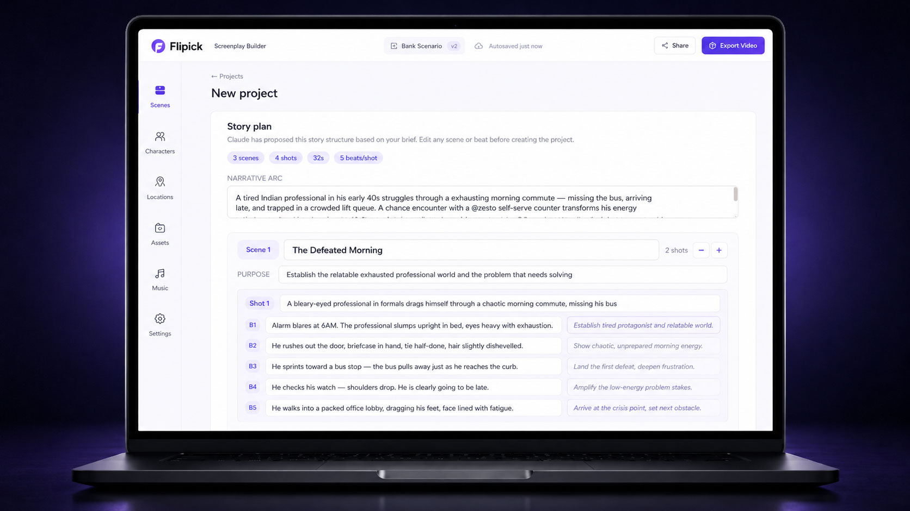
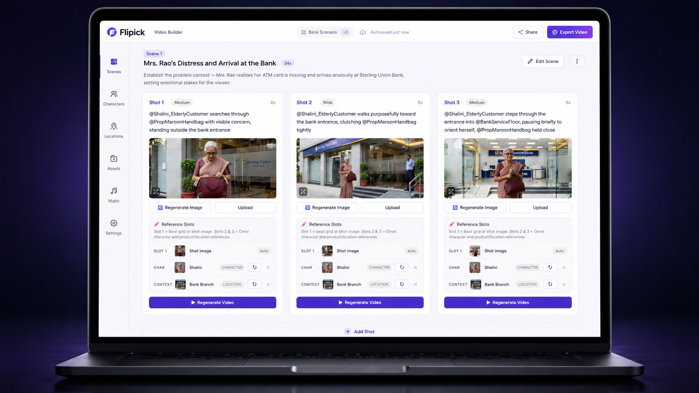
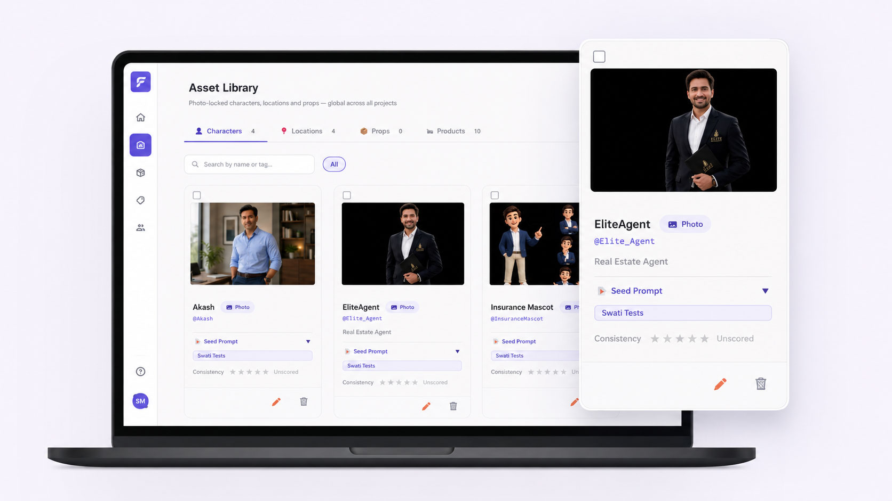
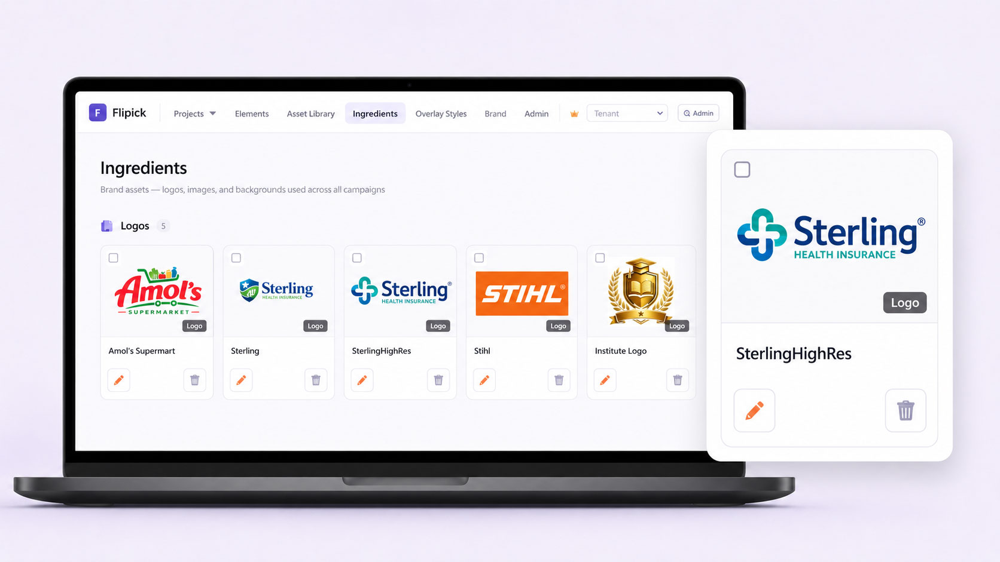
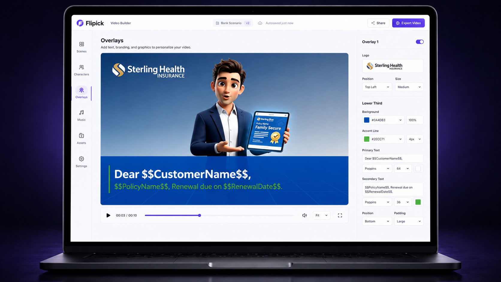
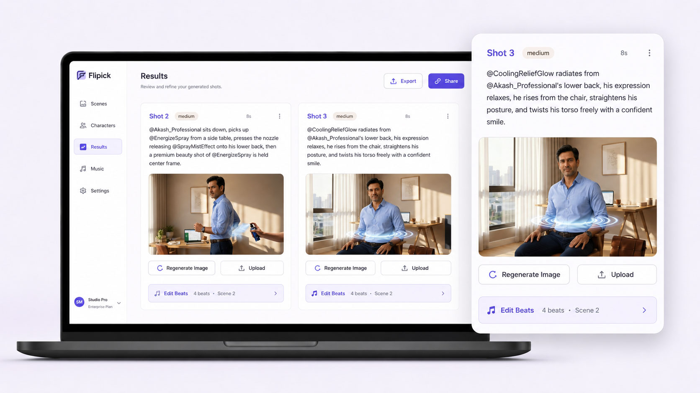
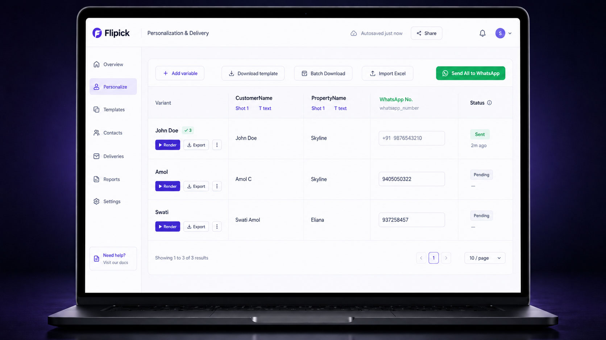

One platform takes a brief from a written screenplay to a finished, on-brand film — then delivers it personally and measures who watched. Here’s the pipeline, the studio tools up close, and the proof.
Five tools do the heavy lifting — from the first conversation to the personalised final frame. Here’s each one on screen.

Describe your objective and the AI builds a production-ready screenplay through a structured conversation — narrative arc, scenes, shot-by-shot breakdowns, voiceover and dialogue.

Once the screenplay is signed off, the Video Builder generates each shot, renders the beats and assembles the cut — with control over every frame.

A central repository of reusable production elements — ambassadors, products, characters and locations — that persist across every project in your organisation, carrying their full visual identity.

Ingredients are static image assets — logos, backgrounds, headline graphics, product shots — stored once and assembled into the personalised frames that sit on top of generated video.

Overlays are composited on top of the generated video — text, logos, pricing, disclaimers, CTAs. Generate the master once; produce 500 retailer variants for a fraction of the cost of 500 videos.

Put the four tools together and you get the thing raw generators can’t do: a presenter and product held steady across a whole film, branded and localised — fast, on brand, and consistent from scene one to nine.

Map recipient fields — name, role, branch, language — and Flipick renders a personal cut for each, delivered by link, email, in-app or your LMS.
Bring a script, a deck or a product, and watch it become a finished, measured video.